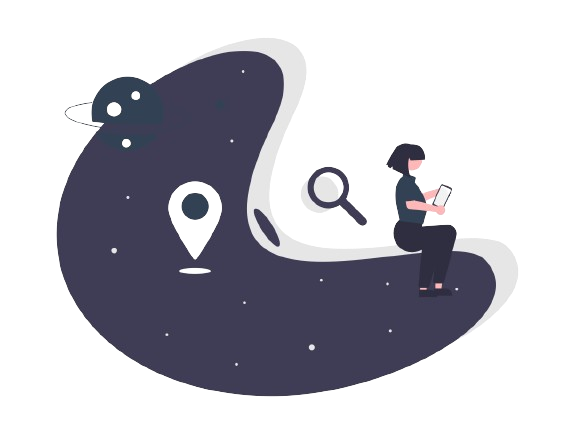

<body class="bg-blue-200">


<main>
  <section class="not-found flex flex-col items-center">
    

    <h1 class="text-slate-700 font-bold text-5xl flex justify-center text-center p-2 m-2">
        Page not found
    </h1>
    <h2 class="text-slate-700 font-semibold text-4xl flex justify-center text-center p-2 m-2">
        Sorry, the page you are looking for could not be found.
    </h2>

    <a href="/elucidata/" class="flex justify-center text-center p-2 m-2">
        <button class="m-2 lg:m-6 bg-gradient-to-br from-purple-600 to-blue-500 hover:bg-gradient-to-bl text-white flex items-center gap-2 px-12 py-4 font-sans text-base lg:text-xs font-bold text-center text-gray-900 uppercase align-middle transition-all rounded-lg select-none disabled:opacity-50 disabled:shadow-none disabled:pointer-events-none hover:bg-gray-900/10 active:bg-gray-900/20" type="button">
            Return home
            <svg xmlns="http://www.w3.org/2000/svg" fill="none" viewBox="0 0 24 24" stroke="currentColor" stroke-width="2" class="w-4 h-4">
                <path stroke-linecap="round" stroke-linejoin="round" d="M17.25 8.25L21 12m0 0l-3.75 3.75M21 12H3"></path>
            </svg>
        </button>
    </a>
</section>

</main>

</body>